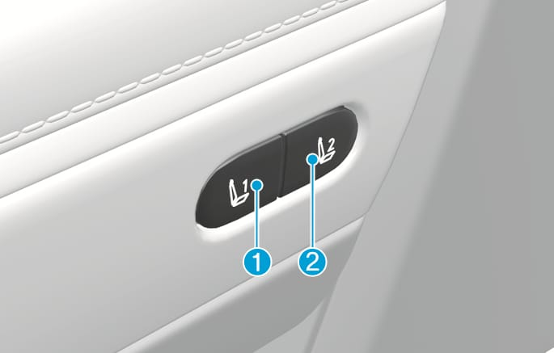

운전석 자세 메모리 시스템 사용하기
운전석 자세 및 위치를 서로 다른 버튼에 저장한 후 버튼을 눌러 불러올 수 있습니다.
차량을 안전한 곳에 정차하고 'P'(주차)로 변속한 후 운전석 자세 메모리 시스템을 사용하십시오.
버튼을 누를 때 자동으로 조절되는 항목은 다음과 같습니다.
-
운전석 위치 및 자세
-
사이드 미러 위치
-
헤드업 디스플레이 높이/회전(사양 적용 시)

2C_SeatMemoryButton
- 1번 메모리 버튼
- 2번 메모리 버튼
운전석 자세 메모리 시스템은 많은 양의 전기 동력을 사용합니다. 배터리 방전을 피하려면 주행 가능 상태(READY) 표시등이 꺼져 있는 동안에는 가급적 이 기능을 사용하지 마십시오.
운전석 자세 메모리 시스템이 정상적으로 작동하지 않는 경우 당사 직영 하이테크센터나 블루핸즈에서 차량을 점검하거나 정비하십시오.